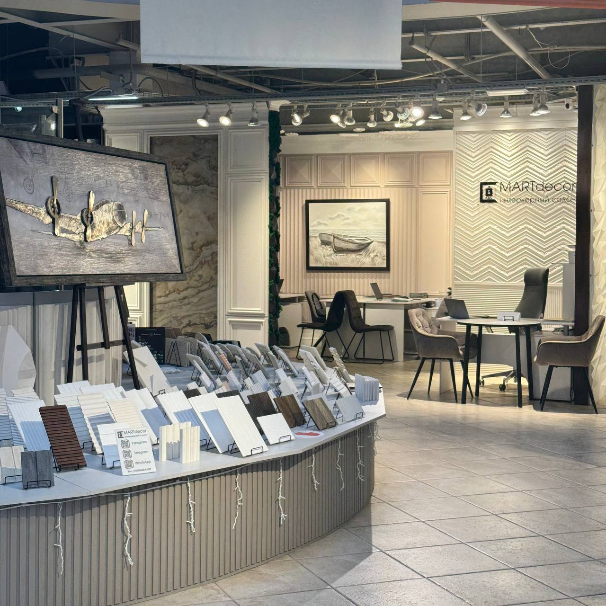

Дистанционный подбор
Пришлите проект, чертежи, развёртки или коллаж. Подберём отделку и декор с учётом общей концепции.
Дизайнерам, архитекторам и мастерам
Берём на себя подбор и комплектацию материалов. Помогаем сохранить идею проекта и разобраться в деталях её реализации.

От спецификации до согласованного заказа
Пришлите проект, чертежи, развёртки или коллаж. Подберём отделку и декор с учётом общей концепции.
Рассчитаем количество, уточним наличие и сроки поставки, подготовим коммерческое предложение.
Поможем заменить недоступную позицию, сохранив подходящие оттенок, фактуру и характеристики.
Предоставим образцы для оценки на объекте. Сопроводим заказ до поставки, хранения и передачи материалов.
Материалы, технология и поставка под задачу объекта
Учитываем помещение, основание и условия эксплуатации. Подбираем грунты, клеевые составы и монтажные элементы.
Помогаем разобраться с подготовкой поверхности, нанесением, поклейкой, стыковкой и монтажом. Точные требования сверяем с документацией выбранного материала.
При расчёте учитываем раппорт, подрезку, запас и раскладку. Обсудим нестандартную геометрию, фрески, панели и сочетания покрытий.
Образцы помогают показать решение заказчику. Сроки доставки на объект согласуем с графиком отделочных работ.
Проводим презентации коллекций и практические мастер-классы по покрытиям, панелям и декору. Ланчи для дизайнеров — каждую среду в 14:00: обсуждаем новинки и тренды. Также организуем семинары и экскурсии на фабрики.
Для подбора подготовьте:
Для технической консультации подготовьте:
Подготовьте план, размеры, спецификацию или фотографии
Укажите бюджет, этап работ и желаемые сроки получения
Обсудите материалы, расчёт и порядок заказа с консультантом
Расскажите о своей работе и задаче проекта
Подбор и комплектация для дизайнеров. Материалы и технические вопросы для мастеров.
Учебный режим: отправку подключим позже. Сейчас данные можно сохранить в этой вкладке.